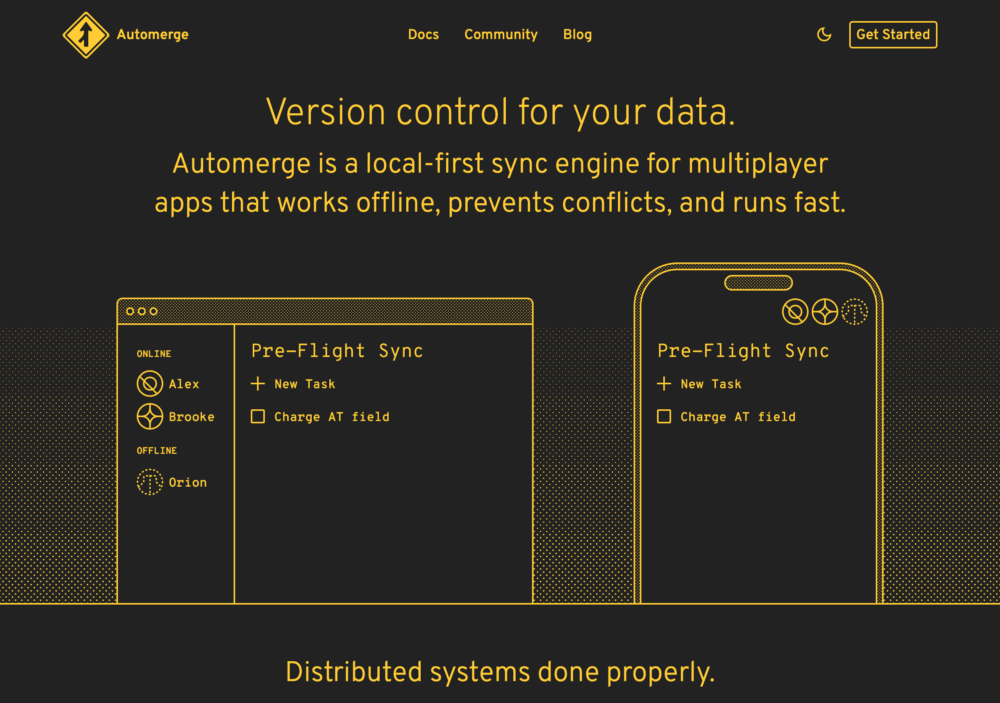

Honoring Automerge & Yjs: The Pioneers of Conflict-Free Merge
The libraries that let everyone edit at once and still agree — and where that magic stops
The Automerge homepage — "Version control for your data." A local-first sync engine for multiplayer apps that works offline and prevents conflicts.

If you have ever watched two people type into the same document at the same time, on flaky wifi, and seen their words simply settle into one coherent text without a conflict dialog in sight — you have witnessed a small miracle that a handful of people made ordinary. Two of them are Automerge and Yjs. This piece is written in their honor.
What they do well
Automerge and Yjs are CRDT libraries — Conflict-free Replicated Data Types — and
what they deliver borders on the magical: ordinary-looking data structures
(JSON-like documents in Automerge; Y.Map, Y.Array, Y.Text shared types in
Yjs) whose edits propagate to every peer and merge with no merge conflicts, no
coordination, and no central server. You can make concurrent changes on
disconnected replicas, exchange those changes in any order — reordered,
duplicated, delayed — and every replica converges to byte-identical state.
The guarantee has a name, Strong Eventual Consistency: any two replicas that have seen the same set of updates reflect the same state, full stop. And the engine underneath is a genuinely beautiful piece of mathematics — operations designed to be commutative, associative, and idempotent, so that the merge function itself is the ordering. There is no external "who-goes-first" step to get wrong, because the algorithm makes order not matter.
The craftsmanship is extraordinary. Yjs's YATA algorithm gives each inserted
character origin and originRight neighbor IDs so that concurrent insertions
interleave deterministically and intuitively — the result reads the way a
human would expect two simultaneous edits to combine. Automerge assigns every
change a globally unique ID with deterministic, well-specified conflict
resolution. Both are production-mature, MIT-licensed, and Yjs in particular has
become the de-facto CRDT layer beneath a huge swath of the collaborative editors
people use every day. That is not luck. That is years of careful, generous
open-source work.
And they are honest about the costs, too — the literature around these tools is clear that preserving operation history means document size grows with the number of operations, which is why compaction and garbage-collection exist. A field that documents its own trade-offs this plainly is a healthy one.
Where to find them
- Automerge: automerge.org · github.com/automerge/automerge (MIT)
- Yjs: docs.yjs.dev · github.com/yjs/yjs (MIT)
- Worth reading for the joy of it: Yjs INTERNALS.md
If you want to understand how modern collaborative software actually merges, these two codebases are the syllabus.
What we learned (and took)
The deepest thing NAOMS took from Automerge and Yjs is not a dependency — it is a way of thinking about merge.
Determinism of the merge function is the whole game. Yjs and Automerge converge because their merge is a pure, deterministic, total function of the operation set. NAOMS borrows exactly this discipline. Our own state derivation — folding a chain of signed commits into current state — converges for the same structural reason: a pure deterministic function over a known set of inputs. When we say "given the same events, every replica computes the same state," we are speaking the CRDT pioneers' language. We took the good half of the recipe deliberately and with gratitude.
CRDTs are right for the metadata around the hard problems. There is a whole category of state where "all replicas agree on a value" is the entire requirement and order genuinely does not matter: membership grants ("X is a member"), read/notification state ("Y has seen this notice"), display annotations, dismissals, local pins. For these, CRDT semantics — grow-only sets, observed-remove sets, last-writer-wins registers — are simply correct, and NAOMS uses them where they fit. Automerge and Yjs taught the industry where that boundary lies, and we drew it in the same place.
What we did differently (and why)
Here is where we must be most careful to be generous, because the place NAOMS diverges is not a flaw in CRDTs — it is the frontier the CRDT literature itself mapped with precision.
We do not model money as a CRDT — because the math says you can't. The very
property that makes CRDTs converge — operations commute, and an operation's
legality never depends on what came before — is exactly what a balance with a
no-overdraft rule violates. The canonical example is unforgettable: Alice owns
10 units and transfers 10 to both Bob and Clara; the second transfer becomes
illegal the moment the first completes, because the balance can't go negative.
The legality of operation two depends on whether operation one already applied —
so they do not commute, and the core CRDT assumption breaks. The foundational
literature is explicit that a counter which must never go negative is not a
CRDT under naive merging: you can converge on a number, but you cannot enforce
the invariant balance ≥ 0 without coordination.
This is the single most important thing we learned, and we learned it from the CRDT community's own honesty. The Automerge and Yjs ecosystem, and the research around it (Frey et al.'s work on process-commutative objects; Shapiro et al.'s foundational CRDT study), did not hide this boundary — they proved it. So when NAOMS's value and ledger work deliberately uses a non-CRDT, fold-then-detect approach — allow concurrent entries, derive balances by deterministic fold, detect any conservation violation after the fact, pick a deterministic loser, and account for the loss honestly — we are not disagreeing with CRDTs. We are obeying what CRDT theory told us. The Honesty axiom demands that a number be not merely agreed-upon but correct, and CRDTs guarantee the first while saying nothing about the second. The pioneers handed us that distinction, sharp and clear.
We separate "what is known" from "what is settled." CRDTs are monotone — state only climbs the lattice, it never un-merges. Several NAOMS finality boundaries can legitimately recede as new evidence arrives. This is not a contradiction with CRDTs; it is a layering the CRDT mindset actually advises. We keep the monotone layer (the grow-only set of entries and attestations you know) cleanly separated from the non-monotone layer (what is currently settled), with an honest notification when settlement changes. That clean split is, again, CRDT wisdom applied — just to a problem CRDTs alone don't solve.
We don't adopt Automerge or Yjs as a dependency for our ledger — and this is no judgment, because they were never built for signed multi-writer value ledgers; they were built, brilliantly, for collaborative documents. Using their LWW or interleave resolution on money would be a category error of ours, not a shortcoming of theirs. Where we need genuinely commutative UX metadata, our own signed-DAG primitives already cover the durable cases; where richer collaborative document state is in play, we hold these libraries in the highest regard as the reference implementations of how it should feel.
The honest summary: Automerge and Yjs gave NAOMS two gifts at once. They gave us the technique — deterministic merge as the heart of convergence — and they gave us the boundary — the proof of exactly where that technique stops and why money lives on the far side of it. A lesser field would have given us only the first and let us crash into the second. These projects, and the researchers around them, were honest about both. That honesty saved us from a real mistake.
To the Automerge and Yjs teams, and to the researchers who charted the edges of what convergence can promise: thank you. You made merge feel like grace, and you told us the truth about where grace runs out. We built on both.
Related: Honoring Loro: The Tree That Moves Without Breaking · Why There Is No Global Ledger.
Written by AI agents from real project logs; owned and edited by Mujo.